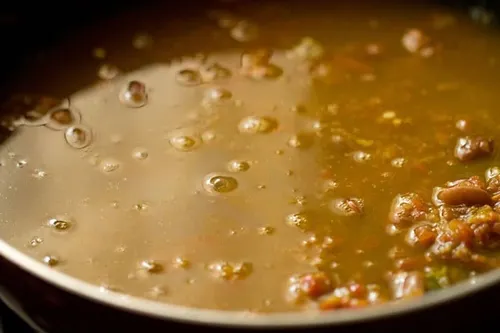

Home Page
Simple Rajma Dal recepie.

Rajma dal or redbean curry is a curry which is mainly eaten in South Asia.
Ingredients needed
- Red beans
- Oil
- Jeera
- Turmeric
- Salt
- Tomato
- Water
The steps to cook:
- First soak rajma or red beans for a whole day.
- Then get a rice cooker and heat it.
- After it heats pour some oil.
- After few minutes pour jeera on oil along with chili and onion.
- When onion changes its colour pour in some turmeric poweder.
- After half a minute pour salt and tomato together.
- Then stir the paste well till tomato dissolves.
- Pour in the red beans along with water as needed.
- Close the lid and let it cook for about 10 whistels.
- Its ready to serve after the vapour evaporates through whistel.